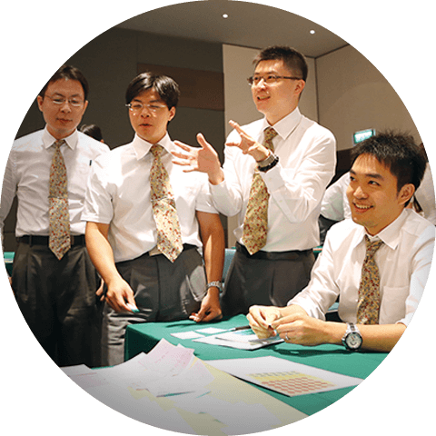
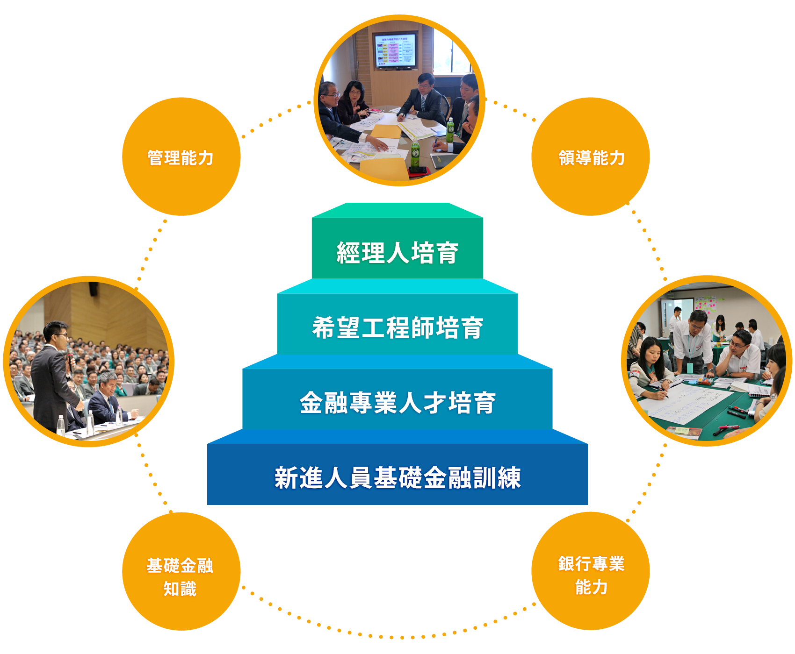
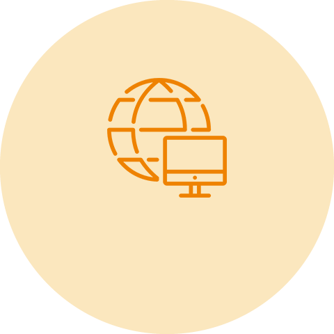
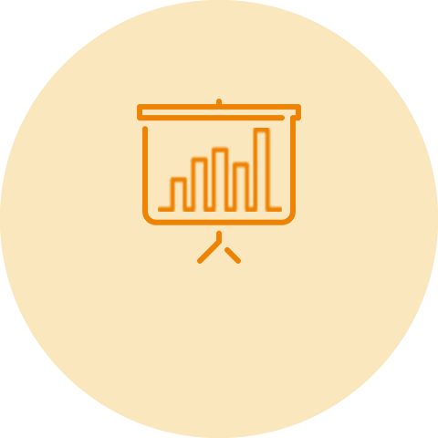

參加甄選
玉山MA擁有最遼闊的遠景，從系統性培育訓練、多元活動參與到中長期職涯發展，學長姊間的文化傳承與團隊合作，讓MA很快就能成為公司優秀的中堅份子。在布局亞洲的大策略下，玉山金控給予年輕世代更多學習成長機會與成就感，用自己的雙手，就可以打造自己璀璨的未來！
玉山MA擁有最遼闊的遠景，從系統性培育訓練、多元活動參與到中長期職涯發展，學長姊間的文化傳承與團隊合作，讓MA打造自己璀璨的未來。
-
MA
歡迎對金融專業、經營管理
有興趣的人才加入專業玉山！ -
TMA
歡迎對程式應用、資訊平台開發
有興趣的人才加入科技玉山！
玉山MA計畫三大特色
-
加入團隊共創希望未來
用自己雙手決定未來
高階主管傳承與培育
團隊共同砥礪與成長
揮灑熱情的寬廣舞台 -

成為全方位金融專業及科技創新人才
系統性建立金融專業
引領先端FinTech趨勢
跨領域歷練與寬廣視野
激盪創新與實踐理想 -
參與亞洲金融平台快速發展趨勢
掌握亞洲崛起契機
開拓國際視野格局
融合跨界多元文化
打造國際級金融人才
-
-
新進人員訓練(1個月)
參加完整新鮮人培育模組，學習財經專業知識、銀行實務演練、資訊系統操作等，建立在金融產業的基礎專業，並逐步融入玉山大家庭。
-
營業單位實習(2~3個月)

第一線營業單位歷練，結合理論與實務，並由經理人及資深學長姐親自指導，透過 On Job Training 學習顧客經營的多元面向，實際了解顧客樣貌與潛在需求。
-
跨事業處輪習(2~3個月)
以金控的角度出發，從企業營運分析與授信評估、顧客資產配置、通路管理、財金交易，到產品企劃、風險控管、資訊系統架構等完整業務歷練，透過客製化課程、實務專案、個案研討、專題報告等多元方式，建立對金控產業的全面認識。
-
第一專長建立(1~3年)
依個人興趣、能力與組織需求，安排第一專長歷練的單位，參與部門內策略專案實作、跨部處溝通協調會議，並由各部門資深主管親自傳承、交流經營策略方向，快速建立在金融職涯發展的第一個專長。
-
多元能力養成(1年起)
透過負責大型重要專案、跨職系輪調、海外歷練…等，拓展自己的視野與溝通整合能力，建構專業、管理、行銷能力，成為能為玉山擔負重要責任的關鍵人才。
-
新進人員訓練(1個月)
- 


{kind=link}
{kind=link}
{kind=link}
{kind=link}
{kind=link}
{kind=link}
{kind=link}
{kind=link}
{kind=link}
{kind=link}
{kind=link}
{kind=link}
{kind=link}
{kind=link}
{kind=link}
我們的工作與生活
玉山結合一群有著相同目標的夥伴互相學習成長，透過團隊的力量共同迎接各項機會與挑戰，我們工作在一起、生活在一起。看看學長姐們多元的工作與生活體驗，一起來創造屬於你的精彩人生！
玉山結合一群有著相同目標的夥伴互相學習成長，看看學長姐們多元的工作與生活體驗，一起來創造屬於你的精彩人生！
- 從宇宙學家到外匯交易員
- 與科技顧問合作系統開發專案
- 總分行輪調-培育全方位企劃能力
- 國際級顧問合作專案
- 法律人在銀行的多元發展
- 從國際新聞記者到金融業新人
- 從銀行到金融科技子公司高階主管
- 藝文活動主持及廣告影片拍攝
- 多元跨領域專業歷練
-
多元背景MA團隊從宇宙學家到外匯交易員財務金融處 陳建文 (台灣大學物理所博士)
牛頓曾說：「我能計算天體運行的軌跡，但無法計算人類的瘋狂。」2012年我走出理性的學術殿堂，踏進了「瘋狂」的市場，一路充滿挑戰與樂趣。在MA的訓練過程中可以輪調各事業處，我的第一站是財金處的交易室，第一天進去聽到周圍的人在說「部位」，以為金融市場有類似醫學將身體分為頭部及手部的概念，還聽到選擇權的Gamma，雖然以前也研究過Gamma宇宙射線，金融市場這個似乎跟遠方天體毫無關係。到了中午我就想，「我是不是瘋了，大學到博士都學物理，竟敢跑到銀行來工作！？」結果沒過了幾天，我就喜歡上了這裡，喜歡這裡人們一同工作也一起歡笑的氛圍，也喜歡每天在金融市場搏鬥，嘗試計算人類的瘋狂。我的同仁有數學家、物理學家、工程師也有研究文創的文青，都在玉山找到工作的樂趣，為自己的生涯打開寬廣的天空，也一起為台灣這片美好的土地而貢獻，關懷環境與教育，撰寫金融光采的歷史。
-
金控重要專案與科技顧問合作系統開發專案數位金融處 吳敏綺 (交通大學科管所)
在玉山，開啟了我的視野。自入行以來，參與過許多重要專案，其中不乏與世界級顧問公司合作的專案，如麥肯錫、IBM、BCG等。與這些顧問公司合作，得到的是國際化的視野，提升的是縱觀全局的思考能力，再複雜的問題，也能做系統化的拆解，一一得出方案計畫。以參加麥肯錫專案為例，我在專案中擔任小組長，評估是否要導入敏捷式開發(Agile)，對我來說宛如開啟一扇新的窗，除了嘗試不同型態的開發法，發現原本以為不可行的方案竟能執行，更學習到顧問的思考、做事與溝通方法。與世界級顧問的合作，就像是站在巨人的肩膀上，有了不同的視野。
-
跨單位輪調培育總分行輪調-培育全方位企劃能力個人金融處 石慧妤 (台灣大學會計所)
財富管理處 王怡琇 (政治大學企研所)從總行投資研究、產品企劃開始一步步扎根學習，心中總想著如何讓企劃與實務結合，更貼近顧客與理專的需求。終於在努力爭取之下到分行擔任投資諮詢顧問，真正面對顧客與投資市場的考驗。投資諮詢顧問平常必須時時關注投資市場變動，用最快的速度提供理專即時、正確的資訊；用專業的角度陪同理專一起為VIP顧客提供投資、稅務等諮詢；或是擔任上百人的大型說明會講師，為VIP顧客深入剖析市場脈動及稅務新知等；也常擔任內部訓練講師，將專業知識分享給更多同仁，提升玉山整體的專業服務。過去在分行累積的經驗，如今看來也都成了寶貴的養分，包含各式各樣顧客真實的聲音、區域團隊運作方式與執行策略等等，讓我們得以在回總行擔任企劃職務時，可以用不同角度思考更周全的策略與執行方案。
-
金控重要專案國際級顧問合作專案個人金融處 林敬偉 (台灣大學會計所)
如果常去書店，對於以下這幾本書名一定不會太陌生，包含「麥肯錫新人邏輯思考五堂課」、「麥肯錫的筆記術」、「麥肯錫精英最重視的39個工作習慣」等等，或許你也曾瀏覽過、甚至買下來回家細讀，但這些都比不上與國際級顧問團隊朝夕相處半年共同執行專案的親身經驗。加入玉山有5年時間，從財富管理跨足到實體通路的管理，因應Bank3.0的浪潮，被組織指派與國際級顧問合作執行相關專案，在玉山除了金融業的Domain know-how，與顧問共同討論所學習到的方法論以及紮實的驗證方式，都讓自己的成長更加快速，在面對不同狀況或甚至是陌生問題時，能更有自信也更有能力因應與解決，在期許自己邁向一流銀行家的願景上，腳步也踩得更加踏實。
-
多元背景MA團隊法律人在銀行的多元發展香港分行 莊哲鳴 (政治大學法律所)
法人金融處 楊登凱 (台灣大學法律所)我們在求學階段就對金融業很有興趣，有志從事金融法務，但在真正來到玉山銀行後，才發現原來法律人在銀行的職涯發展不是只限於法務，其實可以很多元。莊哲鳴：在玉山前幾年我是在法律事務處服務，職責在於確保銀行及金控各種管理措施與營運安排符合法令要求；爾後，由於海外分子行的法令遵循日趨重要，我輪調至香港分行擔任法遵主管迄今2年餘，獨當一面處理分行的法遵事務，成為跨國界的法律人才，為玉山香港的法令遵循把守重要關卡。楊登凱：2012年結束MA總部輪習後，我就被分發到法金處海外管理部發展，在海管部3年多的時間，不僅學習到海外管理的專業，也在申請、營運、管理等不同面向中，了解各地相異的法律體系，並在協助海外單位落實法令遵循的過程中，視野更加地開闊。法律人，您願意給自己多點不一樣的挑戰嗎？
-
多元背景MA團隊從國際新聞記者到金融業新人個人金融處 王逸寧 (交通大學企研所)
以前我是一位國際新聞記者，這個月跑三、四個國家，下個月再到另外一個不同世界生活的日子，似乎羨煞不少朋友，但在三年多的歷練之後，我也曾掙扎並思考自己的專業是否能夠再更進一步提升。因此，當時決定讓自己再進修MBA，而研究所時期在金融業實習經驗，讓我對於金融業的高知識密集與專業，充滿了熱誠與興趣。進入玉山後，跨部處的輪習、完善的培育制度與專業知識學習，讓我看到更多金融業的面貌。同事間的團隊合作與工作氣氛是我當時選擇玉山的重要考量之一，很高興來到玉山後，同仁們不僅是一支堅強的團隊，還像大家庭一般，互相扶持與努力。更讓我珍惜的是，玉山的主管願意聆聽新人想法並給予舞台、學長姐們也都專業且熱忱地給予教導與幫助，對於MA新人而言，只要喜歡接受挑戰、有心學習與努力，玉山會是一個非常好的舞台！
-
跨單位輪調培育從銀行到金融科技子公司高階主管金財通商務科技 簡建益 (台灣大學會計所)
初入職場時，你是否也對未來的職涯發展迷惘過呢？如：在公司中能發展我的專業嗎？組織重視員工嗎？加入玉山後，這些疑問都逐漸消失，玉山對MA培育的用心真的超乎想像，除了依據個人專長、意願而設計專屬的職涯發展，更棒的是有目的、有規畫的安排參與策略性決策會議，逐步培養思考格局。2016年玉山成為了國內第一家投資Fintech的銀行，獲知將負責財務與後勤管理任務時，雖部分業務未接觸過，但憑藉過往累積的經驗，以及團隊的支持，讓我有自信迎接任務。新歷練充滿許多刺激的挑戰，像是以財務思維進行營運資金調度，以法務身份安排董事會等重要會議，以銀行員腦袋參與電商物流整合服務設計，雖然工作過程相當精實，但有意義的忙碌使生活過得充實，同時也讓自己能持續累積更多的能量。
-
金控重要專案藝文活動主持及廣告影片拍攝財富管理處 劉威岑 (台灣大學財金所)
回顧在玉山的這5年，參與了玉山大小事，真正感受到金融業不只是金融業，玉山在培育人才的廣度與深度上更超乎我的預期，在玉山的這幾年，我陸續擔綱許多重要活動司儀或主持人，包含維也納少年合唱團記者會、接待天下國際論壇創新大師克里斯汀生教授、赴柬埔寨擔綱與UCB合作週年的大型晚宴司儀等，持續讓我有機會發揮雙語主持的能力，並透過一次次的歷練，培養口條與面對大型場合的即興應變能力。此外，銀行與社會的連結度高，不僅是服務業也是媒體業，我有幸也參與了2013年玉山財富管理廣告、2015年玉山品牌廣告的拍攝與廣告歌曲錄音，進一步瞭解廣告產業生態、一部廣告如何從無到有地變出來，製片、監製、導演等角色之間的關係，甚至後段的行銷等，不僅大開眼界、獲益良多，回憶起來正是這些平常難以想像、難以接觸的機會，讓我的生活自此變得很不一樣，更加精采，也更具色彩！
-
跨單位輪調培育多元跨領域專業歷練數位金融處 葉懿嫺 (政治大學企研所)
人力資源處 杜信億 ((英)布萊佛德大學企研所)從法金處到數金處：企管背景在金融業該怎麼發展？該往財務金融還是行銷領域作職涯規劃？玉山多元職涯輪調，讓我經歷了兩年法人金融徵信科協助企業授信審核與徵信，接著輪調數位金融數位行銷服務近兩年，在Fintech時代透過數位媒體、社群金融協助Bank3.0推動，同時發揮在學時期專長與興趣。讓法金訓練邏輯思維與分析技能，應用在數位創新領域拓展與專案管理，透過多元訓練激發我的各項潛能、讓能力可以延伸發展，持續挑戰新的業務！從財富處到人資處：從財富處到人資處的歷練，包括VVIP客群經營的行銷專案、整合各通路及異業資源推出高資產顧客專屬權益，培養我跨部門溝通能力以及多元企劃思維。接著透過培育輪調，目前在人資處負責協助整體海外人資制度的建立，以及海外人才招募企劃，每一天都是全新不同的挑戰，也讓我能盡情燃燒熱情的小宇宙，擦亮玉山人才品牌的金字招牌！
跟我們一起去海外
我們持續努力，朝向亞洲有特色的銀行邁進，讓台灣的玉山在國際金融舞台上發光發熱，讓世界聽見台灣的聲音，讓世界看見玉山的驕傲！
我們持續努力，朝向亞洲有特色的銀行邁進，讓台灣的玉山在國際金融舞台上發光發熱，讓世界看見玉山的驕傲！
-
洛杉磯分行
- 洛杉磯分行位處洛杉磯市中心以東25英哩的工業市(City of Industry)，緊鄰南加州華人密集之處。在優質的企業文化和服務導向的經營理念下，洛杉磯分行以商用不動產放款、貿易融資和存匯等多元產品線，秉持專業、熱誠的服務精神，持續為美國顧客提供玉山優質服務。
香港分行
- 香港分行為全功能分行。目前具備存款匯兌、進出口服務、授信融資、財富管理及財務金融(TMU)等全方位產品線，除了債券、保險等多元金融商品，更提供安全便利的網路銀行、傳真交易及整批匯款等現金管理工具。為提供無接縫在地服務，香港分行同仁秉持玉山服務精神，以專業及熱忱面對每一位顧客，打造兩岸三地最佳國際金融平台、台商境外資金調度及理財中心，為大中華地區顧客提供貼心又全面的服務。
新加坡分行
- 新加坡分行位於新加坡重要金融商圈。新加坡身為東協成員國，不僅與其他成員國貿易往來密切，且主權獨立、政局穩定、加上經濟政策靈活變通，使新加坡成為東協的金融中心。新加坡分行是發揮東協樞紐角色，整合區域內的貿易融資及金流服務，成為顧客資金調度、融資中心，致力協助顧客拓展事業版圖。
越南同奈分行
- 越南同奈分行位於越南台商聚集的工業重鎮同奈省，鄰近邊河市區之AMATA工業區入口處。同奈分行是玉山在中南半島之重要據點，將延伸玉山在台灣優質的企業文化，並結合台灣、中國子行、香港分行、柬埔寨子行、新加坡等海外分行，發揮跨平台合作的優勢，提供跨境金融服務，共同服務廣大的客群。
雪梨分行
- 雪梨分行位居雪梨最主要的金融街George Street上，鄰近雪梨歌劇院。澳洲政經環境穩定，雪梨為當地最重要的金融、經濟與貿易中心，金融交易頻繁，商業活動熱絡。雪梨分行將和亞洲其他據點共同合作，提供顧客資金調度、融資及利、匯避險等服務。
柬埔寨子行聯合商業銀行
- 玉山銀行於2013年完成投資柬埔寨子行聯合商業銀行Union Commercial Bank Plc(以下簡稱UCB)70%股權。UCB成立於1994年，總行位於柬埔寨首都金邊，分行通路隨著營運規模擴大而持續拓展中，提供存款、放款、信用狀、保證及信用卡等全方位銀行服務。UCB結合在地既有之優勢和母行資源，加上玉山的品牌價值，為顧客打造在柬埔寨最優質及便捷的金融服務。
玉山銀行(中國)有限公司
- 玉山中國子行於2016年開業，目前設有總行(營業部)、東莞分行、深圳分行、東莞長安支行，為廣大台商及陸資企業，提供整合與創新金融服務，包含人民幣及多種外幣如美元、港幣、日圓、歐元等存款、匯兌、跨境貿易及企業融資等服務，打造兩岸三地金融服務平台，協助顧客靈活配置資產，滿足全方位金融需求。
仰光分行
- 玉山銀行2013年7月成立緬甸仰光代表人辦事處以來，深入了解緬甸金融環境，與當地金融機構交流合作，對緬甸經濟環境與金融發展投入貢獻，獲得緬甸主管機關肯定，並於2016年9月取得執照，10月正式開業營運，目前為唯一在緬甸設立分行之台資銀行。
東京分行
- 東京分行已獲金管會核准，正向當地主管機關申設中，未來玉山的金融服務及業務發展將拓展至東北亞。
印尼雅加達辦事處
- 印尼雅加達辦事處已獲金管會核准，正向當地主管機關申設中。
-
海外短期出差：亞洲多國實地徵信與研討
- 法人金融事業處 王智錞 (台灣大學經濟所)
法人金融事業處 陳碩耘 (政治大學財管所) - 我們2人於法金處負責企業徵信與產業研究，是默契十足的學長學妹！玉山相當重視MA國際視野的培育，入行即使只有2、3年時間，我們仍獲得多次海外實地徵信的機會，隨玉山大中華區及東協佈局的成形，我們足跡遍及中、港、越、柬、緬，至今拜會30多家海外企業。即便於國內已身經百戰，一旦踏入陌生土地，必須拋開慣性與成見，以謙卑及尊敬的心去學習各國文化、政治、產業結構，甚至是生活節奏，才能成為具備國際觀的跨境銀行家。
- 透過海外訪廠，除見識到令人驚嘆的廠區規模與新種產業，也看到台商在外打拼的堅毅，更見證了進行式中的全球產業鏈大遷移。行前雖做了許多功課，但到了當地，才發現讀到、聽到的僅是九牛一毛，只有親自看到、嗅到、碰到與感覺到，才能真正得到！透過海外訪廠，讓我們的世界變得更加開闊與完整。如果說旅遊可以增加一個人的廣度，那海外訪廠就像一趟不同於觀光的旅行，讓我們看到很多不一樣的面向，除了廣度，更有深度與高度！
海外短期出差：至澳洲參加數位金融亞洲競賽
- 個人金融處 羅晶 (中山大學財管所)
- 碧海藍天的黃金海岸，正舉行一年一度的Gartner盛會。而此時會場裡喧囂不斷，觀眾們都正為了台上所簡報的創新金融服務而讚嘆著。就在這天我們以對手無法望其項背，差異懸殊的票數拿下Gartner最佳數位創新成本優化、亞太區最佳數位金融兩項國際性大獎。
- 玉山給予MA寬廣的舞台以及資源，雖然我還沒有太多正式場合簡報經驗，但玉山很願意提供年輕人機會，擔任重要國際獎項的報告人以及專案PM。比賽時站在台上也顧不得緊張，除了有萬全的準備外，我們的目標很明確，就是要把好的產品以及玉山銀行推往國際，讓台下的同業們驚艷。獎項的簡報者幾乎都是各家公司資歷較深、經驗豐富的前輩，台下也有許多各國傑出的同業，在這樣國際的舞台上能代表台灣、代表玉山捧著沉沉的獎盃真的很有成就感！
海外短期出差：送愛到柬埔寨-海外志工活動
- 財務金融處 陳柏翰 (台灣大學財金所)
財務金融處 郭明卉 (台灣大學經濟所) - 玉山銀行善盡企業社會責任，不論文創、環保、生態與教育等社會議題皆積極參與，MA們也常透過志工活動身體力行，將愛與關懷散播到各個角落。我們這次前往柬埔寨當志工，不僅協助柬埔寨當地村民建造房舍，更代表了玉山將愛送到海外。
- 關注世界上發生的事是交易員的職責，但實際走訪並了解東南亞當地的生活型態對我而言是全新的嘗試，「分享」是此趟旅程最重要的關鍵字，平常我們視為理所當然的生活必需品，如乾淨的水和食物、洗手間等，在當地卻是村民們每天努力工作的目標。此次活動對一位交易員而言是難得的經驗，除了改變我們對柬埔寨的印象，也更激勵自己要知足常樂、用心工作與生活。
海外專案任務：海外子分行經營管理
- 法人金融處 黃庭威 (台灣大學國企所)
- 很榮幸有機會被公司外派香港分行約6年，除了每次與顧客接觸中逐漸體會專業與服務的價值，也參與了香港分行策略規劃、專案推動、系統開發設計等過程，這些歷練提升我更全面的解決問題能力及跨部門溝通技巧，也開拓了我的格局及思維。
- 回到總行後，運用香港經驗，參與發展海外子行、分行相關規劃，深刻經歷海外據點從開業、拓展、轉型到持續成長，每個階段所面臨的各種挑戰，除了理論之外，更需要實務經驗、產品知識、國際法律諮詢以及總行各單位與海外密集討論，方能解決問題或建立成功模式。每一次輪調對我來說都是珍貴的經歷，每一個挑戰都是肥沃的養份，歡迎有志於金融業發展的熱血青年們一起加入我們。
海外專案任務：兩岸支付產業跨境合作
- 數位金融處 陳芝亦((英)倫敦政經學院管科所、台灣大學資工所)
- 我從學生時代開始就對新科技的應用及發展很有興趣，因此在玉山經過總分行輪調歷練後，選擇加入數位金融事業處，目前負責新興支付專案的規劃及執行。
- 玉山擁有最年輕的團隊，同時也是最創新、最具執行力的團隊，我們總是率先提出領先同業的新型態服務，也屢次榮獲國內外各項大獎的肯定。2016年有機會和單位主管前往中國拜訪重要策略夥伴，由於中國的電子支付發展很成熟，透過海外商業訪查，除了加速推動跨境專案的進行，也藉此體驗中國行動支付的便利性及實際應用場景，提高自己在專業上的高度與廣度，在玉山的日子裡，每天都充滿新的學習與挑戰，我很享受現在的工作與生活。
海外專案任務：新加坡知名企業交流專案
- 總經理室 李柏陞 (政治大學國貿所)
- 在玉山資源豐沛的成長過程中，想不到的是我竟然有機會可以參與玉山的領導梯隊培育計畫。負責規劃海外參訪行程的我和團隊共同討論，選擇了星展銀行、大華銀行、新加坡航空等國際間優秀的企業做為參訪的主要對象，透過各種管道與當地企業總部取得聯繫，也與台灣地區最高負責人共同商討參訪的內容，讓玉山參訪團一行人能夠有滿滿的收穫。這當中最令人興奮的，是安排亞洲地區甚至是世界知名企業的負責人與玉山經營團隊進行更深入的交流，不僅讓玉山向世界標竿學習，更讓世界看見玉山。
海外長期派駐：亞洲金融中心輪調歷練
- 新加坡分行 洪翊翔 ((美)伊利諾大學財金所)
- 早安，亞洲！你的維多利亞港，我的金融競技場。2007年加入玉山，2010年前往香港擔任金融行銷的工作，海外輪調是驗證MA是否有足夠金融專業因應競爭激烈的環境，無論是拜訪法人顧客或是財富VIP，競爭對手已經升級到跨國大型金融機構，如何在別人的主場作戰取勝，便是要與各地團隊合作，發揮跨境優勢，可謂高手過招，更能激發出團隊潛力。
- 2016年調派新加坡分行擔任交易室主管，耳邊聽的是Singlish加上馬來話，吃的是叻沙跟馬來菜，離開大中華市場，需要面對各種全新的宗教以及文化衝擊；10月初有馬來新年，10月31日是印度新年要記得恭喜印度顧客，7月份有開齋節，是馬來顧客最重視的節慶一定要參加。拿掉過去的本位主義，每一天都是重新學習備戰的日子，在玉山不只是學習專業，更能學到如何解決問題的能力，期待每一位高自我要求的人才加入玉山。
海外長期派駐：開拓香港財金市場
- 香港分行 蔡宜君 (台灣大學國企所)
- 香港是亞太金融中心，世界百大外商銀行群聚，所面對的競爭環境相對激烈，現階段正逢中國金融巿場陸續開放，也見證上海、深圳與香港三地金融巿場互融的進程。香港分行顧客分布兩岸，對外常有機會直接拜訪內地營運廠區，與企業主談論台港陸的政經情勢，對內也常須會同法金、財富及現金管理的同仁進行跨職系交流合作，找出符合實務以及顧客需求的解決方案，考驗團隊如何創新思考以及鍥而不捨地克服跨境限制。
- 因此，作為一位立足香港的財金人員，一定要懂得善用香港這個動態且資源豐富的金融平台，快速地將資訊轉化為專業，並且深入瞭解台港陸各地法令規範的限制與差異，為顧客提供最適服務方案，使顧客滿意玉山所創造的差異化價值，並在香港這個競爭激烈的巿場勝出。
海外長期派駐：海外子行總經理特助
- 柬埔寨UCB子行 呂家豪 ((英)曼徹斯特大學金融所)
- 這是一個要把你十八般武藝全部展現出來的位子，挑戰難度至少有五顆星，一次考驗你的邏輯思維、時間管理、抗壓性與快速學習能力，你也會在最短的時間內學到一間銀行的營運架構與經營概念。
- 在柬埔寨工作，英文聽說讀寫精通是基本條件、缺一不可，關鍵在你的跨文化溝通技巧，不然你一定不了解對方在想什麼；在UCB，日常業務從營運數據監控、資金調度、策略規劃、風險管理、人力資源、董事會甚至是行舍興建等等，所有能讓組織更好的事，都是關鍵任務，不親身體會一次，你不會知道你身上擁有的無限潛力。如果你熱愛挑戰、嘗試不同的工作經驗與人生體悟，這會是你絕佳的舞台與發揮機會，收穫是滿滿的成就感與壓縮時間加速成長的喜悅！
加入我們吧
玉山認為人才與創新是企業建構核心競爭力最重要的關鍵，也是邁向永續經營最重要的基石。只要你夠優秀、且有志於在金融業發展，歡迎加入我們，一起學習成長，共同彩繪未來和夢想。
玉山認為人才與創新是企業建構核心競爭力最重要的關鍵。歡迎加入我們，一起學習成長，共同彩繪未來和夢想。
甄選流程
-

Step 1
履歷申請
還在等什麼呢？趕快填寫玉山線上履歷、完成報名，我們履歷隨到隨審，請耐心等待喔~
-

Step 2
第一階段面試
與我們各事業處傑出經理人及MA學長姐第一次的交流認識，形式包含小組討論、英文會話、個人特質及邏輯思考面談。
-

Step 3
第二階段面試
與人資長、策略長、數金長等高階主管進行專題報告、時事分析研討，也可和MA學長姐們交流在玉山職涯的點點滴滴、收穫與成長。
-
Step 4
第三階段面談
與經營團隊近距離接觸，瞭解我們的經營理念、玉山對於MA的重視與期待、以及自己未來成長發展的舞台。
-
Step 5
錄取培育說明會
歡迎你加入我們！我們將完整說明MA的培育規劃、中長期職涯發展與薪資福利，也會帶你參觀我們快樂的工作環境。
校園說明會
-
活動場次中山大學交通大學清華大學台灣大學成功大學中正大學逢甲大學台北大學中央大學台灣科大政治大學中興大學
-
2017年活動時間2017/03/02(四) 12:30 - 13:50中山大學地點尚未公布2017/03/08(三) 12:10 - 13:00交通大學地點尚未公布2017/03/09(四) 16:00 - 16:50清華大學名人堂2017/03/10(五) 14:10 - 15:10台灣大學集思會議中心蘇格拉底廳2017/03/11(六) 13:00 - 13:50成功大學光復校區第二演講室2017/03/14(二) 13:00 - 14:00中正大學地點尚未公布2017/03/14(二)逢甲大學地點尚未公布2017/03/15(三) 12:00 - 13:00台北大學地點尚未公布2017/03/16(四) 17:10 - 18:00中央大學太空及遙測研究中心R3館103室2017/03/21(二) 13:20 - 14:10台灣科大綜合研究大樓國際會議廳2017/03/23(四) 12:10 - 13:00政治大學商學院國際會議廳2017/03/29(三) 12:10 - 13:00中興大學地點尚未公布
-
活動地點尚未公布尚未公布名人堂集思會議中心蘇格拉底廳光復校區 國際會議廳第二演講室尚未公布尚未公布尚未公布太空及遙測研究中心 R3-103階梯教室綜合研究大樓1樓 RB-102國際會議廳商學院國際會議廳尚未公布
申請資格
- 1、國內外一流研究所畢業、流利的中英文表達能力，TOEIC 800分以上。
- 2、對金融業充滿熱情，喜歡團隊合作，有強烈的責任感，想挑戰自我極限。
- 3、擁有問題分析解決能力，高度抗壓性，願意接受跨領域的培育與輪習。
常見問題
如果您沒有找到您要的答案？歡迎使用訪客留言板線上提問，「留言之業務項目」選擇人力資源，我們將盡快解答您的問題！
-
我不是商管相關科系畢業，這樣還可以進入銀行工作嗎？
可以。玉山也有很多學長姐是理工、法律等非相關科系背景畢業，只要您對金融業充滿熱忱，想要挑戰銀行的工作都非常歡迎，而且並非所有職務都需要金融相關背景，建議可以參考熱門職缺瞭解各項職務之工作內容與條件說明，再針對有興趣的職缺投遞履歷。
-
我沒有金融相關證照還可以應徵嗎？
可以。唯因財富管理職系的職務關係，需具備規定之相關證照，其他職缺的部分可於入行後半年內陸續考取，學長姐也非常樂意提供意見與協助。
-
為什麼我收到的面試通知和我當初投遞的職缺不同？
玉山會根據您所投遞的職缺及個人學經歷背景初步去評估適合您發展的領域，現場面談後再依照您的面談結果做最適安排。 -
履歷初審大約需要多久呢？若沒有通過會回覆嗎？
履歷初審階段約需 7 個工作天，無論是否通過初審皆會通知，請您留意手機、簡訊或E-mail信箱。 -
請問面試邀約當日無法參加怎麼辦？
若您確定無法參予，請直接於面談回覆系統選擇無法參加，並說明原因即可，下次面談場次確定後會再盡快與您連繫。 -
請問第一階段面試當天需要準備什麼嗎？
第一階段面試以面談為主，當天只會進行面試及問卷填寫，因本行有人員進出入管制，故當天請攜帶有照片之證件及文具即可。 -
面試結果大約多久通知呢？
面試成績評估約需 7-10 個工作天，請您留意手機、簡訊或E-mail信箱。 -
無法登錄履歷維護畫面，該如何填寫履歷呢？
(1)若您是初次填寫履歷，請先註冊登入。(2)已填寫過玉山履歷者，請先確認密碼無誤，若您忘記密碼，請點選「忘記密碼」，系統會重新寄送密碼至您的e-mail信箱。(3)若您已填寫過玉山履歷但未設定密碼者，請您使用預設密碼「0000」登入，系統將與您核對資料，核對正確後即可自行設定密碼以便登入。 -
在填寫履歷時，大頭照一直無法上傳成功怎麼辦？
若照片大小太大，建議您可利用小畫家或至網路上下載圖片壓縮軟體進行壓縮。上傳的大頭照必須符合以下格式： (1) 請上傳正面、清晰、彩色兩吋證件專用大頭照(學、碩士照亦可) 。(2) 圖檔格式限jpg 、gif、bmp、png格式。(3) 照片最適大小為寬150*高180像素，檔案大小請勿超過1MB。